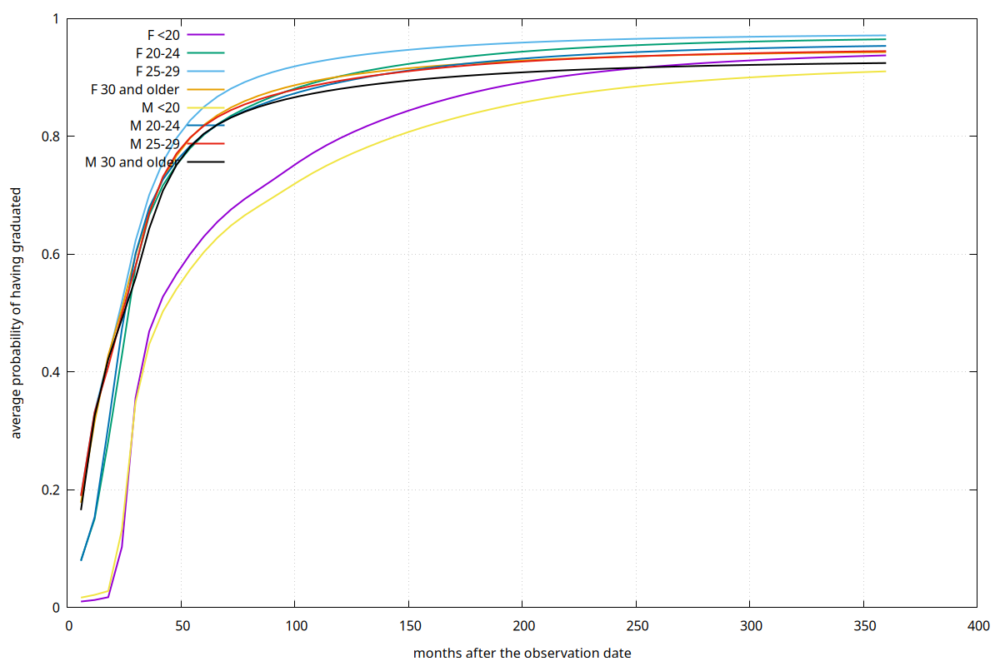
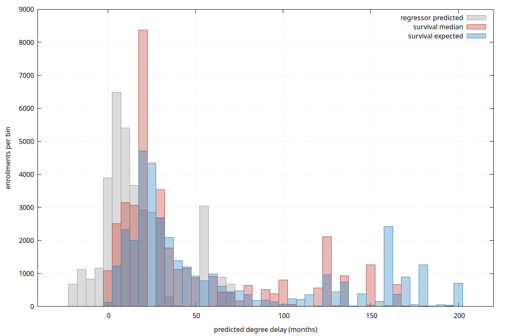

Student Performance Yeld Detector
A less-than-intelligent system!
Luca Ferrari
https://github.com/fluca1978/stupyd
A playground to experiment with MLP and NNs
Predict students degree delay (in months) given a set of features
Part of the application has been developed with an agent support.
src mirrors original data (e.g., riga_libretto) in an anonymous (quasi) waypublic contains student, enrollment, course, department and join tablesml contains two materialized views that are used as features and read from the data loadermain.py is the entry point, accepts commands:
train or predict
--regressor--survivalembed or query--learning-rate, --epochs, etc.Outputs:
models/<model-type>/yyyy_mm_dd/stupyd_model.py
models/<model-type>/yyyy_mm_dd/stupyd.csv
Configuration (stupyd.json) shared at run-time.
torch.nn.Module
└── StupydNormalizer # scaling, save+load
└── StupydModel # base class
├── StupydRegressorModel # one delay in months
└── StupydSurvivalModel # time distribution
torch.utils.data.Dataset
└── StupydDataset # loads `ml` from PostgreSQL
└── StupydSurvivalDataset # adds (duration, event) timeline
torch.utils.data.DataLoader
└── StupydDataLoader # batches (or CPU crashes!)
StupydCohort # model owner: dataset + periods + batched scoring
├── StupydRegressorTrainer
├── StupydRegressorPredictor # loads the model and scores a cohort
└── StupydSurvivalCohort # time based model
├── StupydSurvivalTrainer
└── StupydSurvivalPredictor # loads a hazard checkpoint and scores
StupydEmbedder # playground for PgVector
stupyd.json contains the bootstrap configuration.
The in-memory configuration is updated as the application goes on
and is shared among the application parts.
"periods": {
"training" : { "begin" : 1900, "end" : 2021 },
"validating" : { "begin" : 2022, "end" : 2022 },
"testing" : { "begin" : 2023, "end" : 2023 },
...
| Stud | Enroll | Feats | Grad | Output |
|---|---|---|---|---|
| A | 1/9/2018 | 1/9/2018 - 1/9/2019 | 1/9/2023 |
regressor: 2023 - 2018 - 3 years = 24 months
survival: (48 months duration, graduated = True)
|
| B | 1/9/2018 | 1/9/2018 - 1/9/2019 | not yet, last observed at 31/12/2025 |
regressor: dropped (not graduated)
survival: (76 months duration, graduated = False, probability = 0.x)
|
self.neural_network = nn.Sequential(
nn.Linear( feature_mean.numel(), 64 ),
nn.ReLU(),
nn.Dropout( 0.15 ),
nn.Linear( 64, 32 ),
nn.ReLU(),
nn.Linear( 32, 1 )
)
loss = functional.smooth_l1_loss( .. )
Use Huber Loss which acts as Mean Squared Error near the optimum (|error| < β)
and Mean Average Error (linear) for the outliers.
# loss function
loss = -( outcomes * torch.log( safe_hazard )
+ ( 1.0 - outcomes ) * torch.log( 1.0 - safe_hazard ) )
at_risk = tensors[ "at_risk" ]
per_enrollment = ( loss * at_risk ).sum( dim = -1 )
return per_enrollment.mean()
Negative Log Likelihood: divide time in intervals (6 months) and the loss is the negative log of the probability the model assigns to the sequence observed.
% python stupyd/main.py train --survival
Starting survival training mode (stupyd v0.1)
epochs : 100
learning rate : 0.001
interval width: 6.0 months
follow-up up : 360.0 months
config : ~/git/stupyd/stupyd.json
output to : ./models
Training (survival): 100%|██████| 100/100 [15:36<00:00, 9.37s/it]
time axis: 60 intervals of 6 months, up to 360 months
validation_concordance overall=0.666 F=0.650 M=0.690
validation_median_mae_months overall=6.50 F=6.28 M=6.78
test_concordance overall=0.671 F=0.669 M=0.677
test_median_mae_months overall=5.55 F=5.04 M=6.18
PyTorch survival model saved to
[models/survival/2026_10_15/stupyd_model.pt]
% python stupyd/main.py predict --survival \
--filename models/survival/2026_10_15/stupyd_model.pt
...
Predictions saved to
[models/survival/2026_10_15/stupyd_prediction.csv]
Short answer: it is quite stupid at doing things!

Sooner or later the probability of graduation hits 1!
Did we need all this stuff then?
Comparison between the models

Use course description and other text information to store an array of
features. Use cosine distance to spot similarity.
Tokenizing with sentence-transformers/all-MiniLM-L6-v2.
% python stupyd/main.py embed
Starting embedding mode (stupyd v0.1)
dry run : False
model : sentence-transformers/all-MiniLM-L6-v2
output to : courses.embedding
Loading weights: 100%|██████| 103/103 [00:00<00:00, 2890.30it/s]
Batches: 100%|██████| 4/4 [00:00<00:00, 31.17it/s]
embedded 112 courses
% python stupyd/main.py query --query 'informatica'
...
courses most similar to 'informatica' (out of 1252)
0.807 16-362 LM Informatica
0.807 16-262 LM Informatica
0.798 16-209 L2 Informatica
0.798 16-315 L2 Informatica
0.798 16-215 L2 Informatica
0.679 20-202 L2 Ingegneria informatica
0.674 20-262 LM Ingegneria informatica
0.674 20-362 LM Ingegneria informatica
0.652 20-253 LS Ingegneria Informatica
0.649 20-312 L2 Ingegneria Informatica (MO)
20-262 is better than 20-362, which is wrong!
More context needed for embeddings.
% python stupyd/main.py query --query 'excel'
...
courses most similar to 'excel' (out of 1252)
0.285 CP20-6 CP Metodologie, Tecniche e Tool per Analisi di Big Data
0.265 16-362 LM Informatica
0.265 16-262 LM Informatica
0.250 16-209 L2 Informatica
0.250 16-315 L2 Informatica
0.250 16-215 L2 Informatica
0.244 B016-FI FI LAB SCIENZE E TECNOL INFORMATICHE
0.237 TFA_AC06 TFA A245,A246 - A245 LINGUA STRANIERA (FRANCESE),
A246 LINGUA E CIVILTA' STRANIERA (FRANCESE)
0.235 20-821 M2 Visual Computing and Multimedia Technologies
TFA_AC06 is better than 20-821, again there is the need
for more context.
Comes from the LLM
courses most similar to 'neural networks' (out of 1252)
0.411 20-373 LM Artificial intelligence engineering
0.411 20-273 LM Artificial intelligence engineering
0.304 CP20-13 CP School in AI: Deep Learning, Vision and Language for Industry
0.295 CP20-10 CP Cyber analyst
0.293 95-1007 D2 Intelligenza Artificiale - sede Pisa - dottorato nazionale
0.284 95-96 D2 Neuroscienze
0.281 14-890 M1 Intelligenza artificiale per le professioni e l'impresa
0.278 11-214 L2 Scienze strategiche
0.278 11-204 L2 Scienze strategiche
0.274 95-80 D1 NEUROSCIENZE
production un-ready!